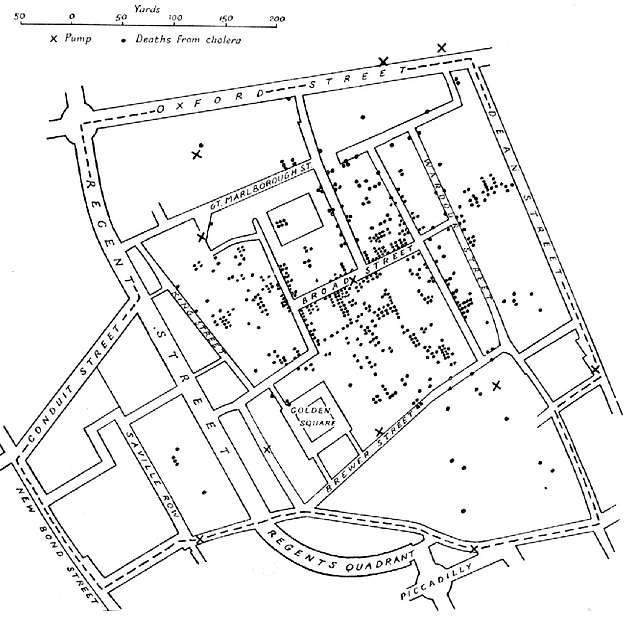
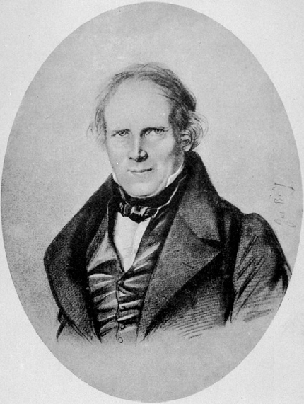

Módulo 3 | Aula 1
Abordagens teóricas da Geografia da Saúde
Mapeamento em estudos de saúde
Desde o início do século XIX, o uso do mapeamento e da análise espacial passou a ocupar um papel central no desenvolvimento da saúde pública, ao permitir a visualização da distri-buição geográfica das doenças e sua relação com fatores ambientais e sociais. Em um con-texto marcado por rápidas transformações urbanas, industrialização e altas taxas de mor-talidade, mapas e estatísticas tornaram-se ferramentas fundamentais para compreender padrões de adoecimento que não eram evidentes apenas por meio de observações clínicas individuais. Essa mudança representou uma transição do entendimento das doenças como eventos isolados para sua concepção como fenômenos coletivos, socialmente e territorial-mente determinados.
Alguns marcos importantes do início desta história:
Os trabalhos de William Farr, nas décadas de 1830 a 1850, foram essenciais para consolidar essa abordagem. Ao sistematizar registros de mortalidade e analisá-los segundo local, idade e ocupação, Farr demonstrou que a ocorrência de doenças variava de forma consistente entre diferentes áreas e grupos populacionais. Embora ainda influenciado por teorias miasmáticas, seu uso de dados espaciais permitiu identificar desigualdades regionais de saúde e estabelecer as bases da vigilância epidemiológica moderna. Dessa forma, o mapeamento passou a ser entendido como um instrumento estratégico para a administração sanitária e a formulação de políticas públicas (Eyler, 1973).
Fonte: Unknown author - johnsnow.matrix.msu.edu, Public Domain, Wikimedia Commons
O marco mais emblemático da epidemiologia espacial é o estudo de John Snow sobre o surto de cólera de 1854 em Londres. Ao mapear os casos da doença e relacioná-los à localização das bombas de água, Snow demonstrou empiricamente a associação entre a contaminação hídrica e a disseminação da cólera. Esse trabalho não apenas contestou a teoria miasmática dominante, mas também evidenciou o poder do mapeamento como ferramenta analítica capaz de revelar relações causais entre ambiente e doença. O mapa de Broad Street tornou-se um símbolo da aplicação do raciocínio geográfico na investigação epidemiológica e no controle de surtos (Snow, 1855).
John Snow (1813-1858) foi um médico britânico e um dos fundadores da epidemiologia moderna
Fonte: Originally from en.wikipedia; description page is/was here., Domínio público, Wikimedia Commons

Fonte: picryl.com
Mapa elaborado por John Snow no estudo da epidemia de cólera em Londres em 1854.
Os pontos indicam a localização de pessoas afetadas pela cólera e as cruzetas indicam os poços de onde as pessoas coletavam água para consumo.
Florence Nightingale ampliou o uso de representações espaciais e gráficas para demonstrar a influência das condições sanitárias sobre a mortalidade. Por meio de mapas hospitalares e diagramas de áreas polares, Nightingale evidenciou que a maioria das mortes de soldados durante a Guerra da Crimeia era causada por doenças evitáveis, e não por ferimentos de guerra. (Bradshaw, 2020) Ao transformar dados complexos em imagens fáceis de entender, ela ajudou a popularizar o uso de mapas e visualizações como ferramentas importantes na saúde pública, capazes de apoiar mudanças e melhorias nas políticas e instituições.
Fonte: H. Lenthall, London - Este ficheiro foi extraído de outro ficheiro, Domínio público, Wikimedia Commons
No início do século XIX, os estudos de Louis-René Villermé introduziram uma dimensão social ao uso do espaço na análise da saúde. Ao correlacionar mortalidade, condições de trabalho e níveis de pobreza em diferentes áreas de Paris, Villermé demonstrou que a distribuição das doenças estava profundamente ligada às desigualdades sociais e territoriais. Embora seus trabalhos antecedam a epidemiologia espacial formal, eles antecipam princípios fundamentais da saúde coletiva contemporânea, ao integrar dados geográficos, sociais e econômicos na explicação dos padrões de adoecimento (Julia & Valleron, 2011).

Fonte: H. Lenthall, London - Este ficheiro foi extraído de outro ficheiro, Domínio público, Wikimedia Commons
Essas experiências históricas demonstram que o uso de mapas se tornou fundamental para a saúde pública porque permite visualizar onde surgem doenças, identificar desigualdades e entender como fatores ambientais e sociais influenciam a saúde. Esse legado mudou a forma de estudar e enfrentar problemas de saúde coletiva e, até hoje, continuam essenciais em atividades como o uso de Sistema de Informações Geogrpaficas (SIG), a vigilância epidemiológica no território e o planejamento em saúde baseado em informações espaciais.
É justamente nesse ponto que a Geografia da Saúde se destaca, pois utiliza essas ferramentas e perspectivas para analisar como o espaço, o território e o lugar influenciam a distribuição das doenças, o acesso aos serviços e as condições de vida das populações.